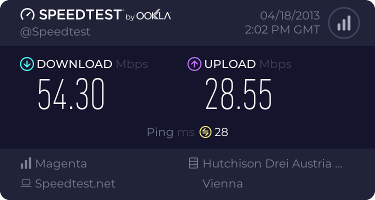
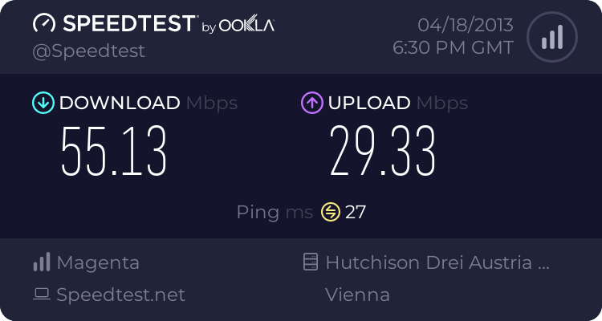

weiß wer wie ich als bestandskunde zu den neuen tarifen komme?
über das mein t-mobile kann ich einige tarife für den wechsel zwar auswählen, allerdings sind die home net tarife nicht dabei.
brauche ich da eine vertragsverlängerung?
weiß das wer?
danke, lg
Chris
Hi NED, Home Net ist ja ein fertiges Produkt, also Router plus Tarif.
Und neue Geräte kriegst du ja nur in Verbindung mit Neuanmeldung oder Verlängerung.
LG
Gast Guest
Hallo,
hat das schon iwer getestet???
Würd mich echt interessierten wie das läuft u. ob sich ein Wechsel auszahlt...
ruolf
das würde mich auch interessieren.
Vor Allem der Ping (über 100 ist das eher suboptimal für online games)
Wenn hier jemand bereits Erfahrungen hat, wäre ich auch sehr dankbar :)
NED
thx
meine verlängerung ist im juni fällig. ich hoffe es gibt bis dahin einige erfahrungsberichte, wobei das lte schon interessant ist. ein netz mehr kann sicher nicht schaden
ich würde mich über berichte von wechslern freuen, die schon vorher internet von t-mobile hatten
und jetzt auf den router umsteigen. ich müsste vom router4 auf den lte wechseln. hoffe dieser umstieg bring auch außer lte noch den einen oder anderen vorteil.
Kefra
Meine Verlängerung ist noch so lange hin und ich hab zuhause Mobile Internet mit dem Router (WLAN III) und im iPad steckt auch eines drinnen.. kann mir ned noch eines anmelden :(( meine Freundin schmipft sonst glaub ich mit mir *fg*
In anderen Foren hab ich schon ein paar Speedtests gesehen.. die schauen mehr als nur genial aus.. ich auch will.. :(
Greez Kefra
Gast Guest
ich kann nur sagen falls man LTE empfang hat lohnt es sich schon. der ping ist auch viel besser
und konstant.

fühlt sich so an wie richtige glasfaser ^^
Link zu diesem Kommentar
Auf anderen Seiten teilen
Kundenservice_ALT
Hallo Han Solo!
Danke für deinen Screenshot und Speedtest. Über solche Ergebnisse freuen wir uns natürlich sehr
.
Ich kann nur hoffen, wir bekommen noch ein paar Eindrücke aus der Praxis von unserem Home Net.
Grüße Philipp
sunshine
hi han solo,
super...find ich echt klasse. ist also wirklich `ne überlegung wert.
weiterhin viel spaß beim surfen.
lg sunshine
Gast Guest
">
auch abends 20:30 Uhr

egal zu welcher uhrzeit ich teste die werte sind immer optimal :D
also LTE ist schon ein sehr großer schritt in die richtige richtung für mobiles internet.
Chris
Sieht echt gut aus, bringt mehr als UPC. Leider gibt's bei mir noch kein LTE. Aber das wird ja womöglich noch, dann würe es mehr als eine Überlegung wert.
Gast Guest
Ich frag mich nur bei welchen datenmengen Tmobile wircklich seine Kunde anschreibt,falls diese Datenmengen zu hoch wären :D
100 GB-300 GB vlt ? ;)
Wollte ihn mir auch hollen um damit dann meinen Apple Tv zu streamen,da ich auch sehr viele HD Videos ziehe aus em iTunes Store,darum meine Gedanken
Kefra
Hi Marko,
ich hab das in den FAQ (
http://faq.t-mobile.at/app/answers/detail/a_id/3688/kw/3688
) auch schon gesehen und vermute mal, dass sie damit meinen, dass man Home Net über einen Server rennen lässt und zick Rechner damit betreibt.. daher denke ich, dass hier wirklich mehrere Terabyte gemeint sind. Sonst hätten sie es wo in den Tarifen etc. festgehalten.
Bei 100 GB ..gerade bei einer solchen wirklich tollen Datenrate, bei der es ja logisch ist das man mehr verwendet.. würde ich mir an deiner Stelle keine Sorgen machen.
Greeez Kefra
NED
diesen grundsatz haben auch viele kabelbetreiber. diese definieren zwar ihre grenze, schreiten aber oft erst ein, wenn die kapazität des netzes darunter leidet. einige sind natürlich konsequenter als andere.
so wie ich es lese ist es nur eine möglichkeit, welche sich t-mobile offen hält um ggf. bei voll ausgelastetem netz eine weitere regulatormöglichkeit zu haben.
wenn mit home net t-mobile einen kabelersatz liefern will, dann werden sie sicher auch nicht alle kunden mit einer usage von zb.150 gb anschreiben. es bedeutet ja auch einen hohen aufwand für den betreiber.
es wird sicher, wie auch hier bei anderen, der tarif eine rolle spielen. wennst den 100er nimmst, zahlst du mehr und bringst t-mobile auch mehr als mit einem 10er.
ansonsten bin ich auch bei kefra --> von ein bisschen streamen wirds schon nicht sein.
NED
NED
router 4 vs lte router
freund sei dank konnte ich gestern einen lte router am abend mal ausprobieren.
bis dato dacht ich nur einen vorteil durch lte zu bekommen. allerdings gibt es
auch beim 3g interessante unterschiede.
bei 3g performt der lte router um ca 3 mbit im download besser
- der upload ist ident. beim roter 4 hatte ich im schnitt 9 mbit und beim lte router 12 mbit. (mehrere speedtests parallel)
interessant war auch, dass der lte router bei 3g keinen ausschlag an der empfangsanzeige hatte und der router 4 mir ganz 2 stricherl angezeigt hat. ich denke mal der lte router untertreibt hier. siehe auch
post von lafo
lte im vergleich natürlich der hammer (home net 100) mit ca 40 mbit im download.
interessant war nur: der upload war bei lte deutlich langsamer - ca. 1,5 mbit, wobei ich bei 3g ca. 2,5 mbit hatte.
ich hoffe der upload ändert sich noch bei lte. ist bei mir ein starkes kriterium für ein "mobiles" internet.